来源：https://rxc7lnelf7.feishu.cn/docx/Y7E7dYQBLoSLrAxDUWXccjC1nJX
各位生财航海家，下午好，我是孟哥，非常荣幸今天能来到现场给大家做这次分享。
我分享的主题是如何用一套共赢的商业模式从零孵化1000个视频号达人。
那先聊聊，通过这个模式我拿到了什么结果？
用一年时间，在多多视频这个项目上，孵化了1000位达人，每月发放6位数佣金，利润超千万。
多多视频形式
达人剪辑站外素材，上传视频到该入口，挂上拼多多商品链接，即可出单赚取佣金。
视频号素人口播项目形式：
素人出镜，念爆款文案，通过短视频进行种草，视频爆量后，开直播出单转化，赚取佣金。
2024年9月24号作为视频号带货团长头部，被定向邀请参加了「微信小店带货达人闭门会」，得到了官方的认可与支持。
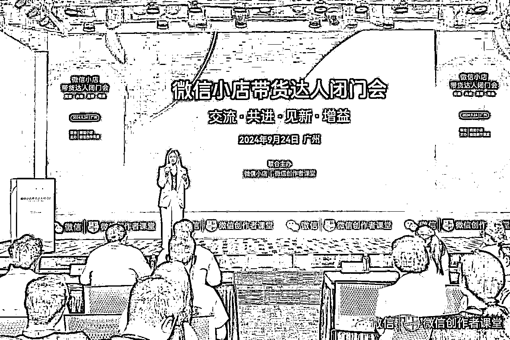
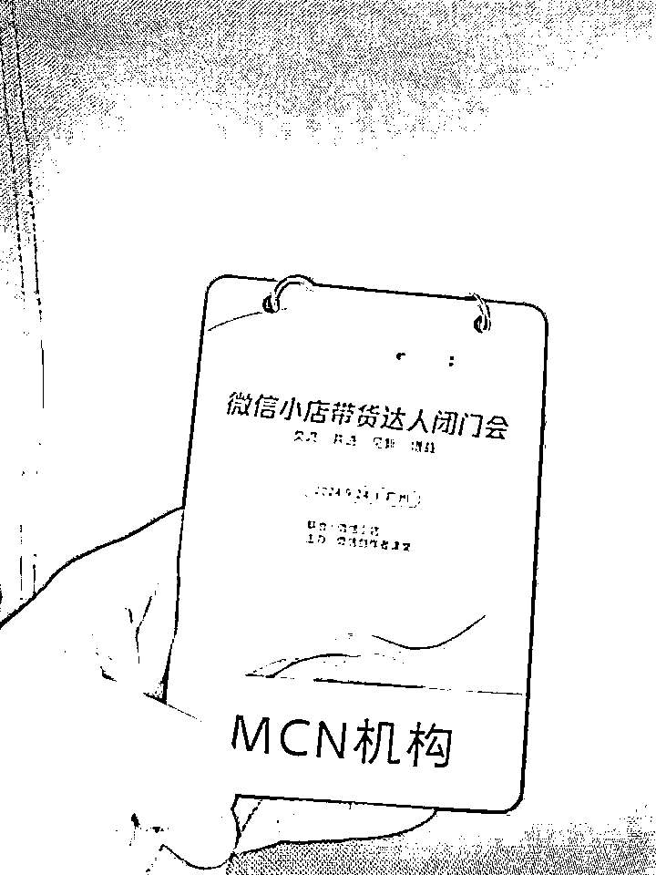
2025微信公开课PRO上荣获微信官方重点提名，获得「优秀联盟带货机构」荣誉，是众多服务商里唯一原生视频号带货团长，喜提官方认证微信小店·视频号带货团长第一。
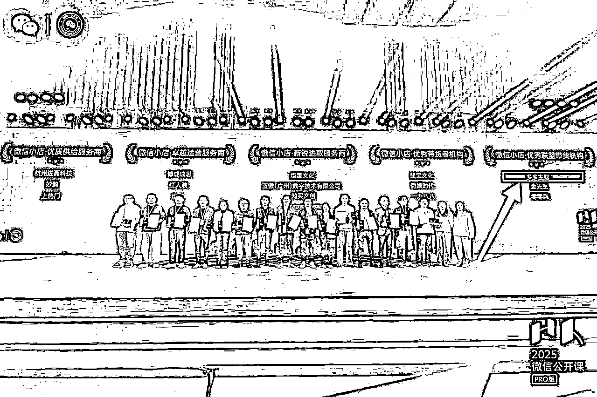
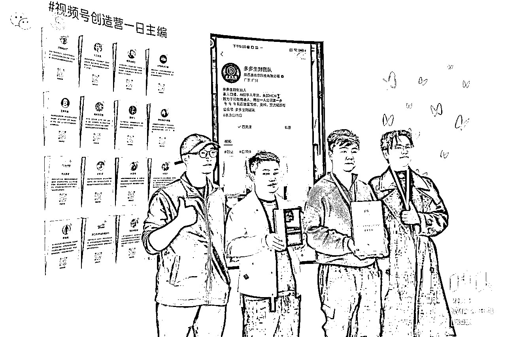
我是一个00后的农村小伙，16岁初中毕业被迫辍学，那年我老爹被生意伙伴下套，资金链断了，后面各种折腾，又走了弯路，不仅背上负债还蹲上了号子。
这也成为我一直以来的底线，就是赚钱一定不能做损人利己的事，一定不能做违法犯罪的事。
作为家里的老大，我只能被迫辍学，自力更生，给母亲一份安慰，给自己一份希望，当时的第一念头是，我得先把给我爹打官司、请律师应诉的钱挣出来。
我没有接受过太好的教育，我的家庭也没有给我任何资源或者背景，辍学之后我为了赚钱还家里的债务，我开过餐饮店、做过外卖运营、混过地推BD，干过生财里的各种小项目。
但个人的力量是有限的，一个人再怎么拼命，每天就是24小时的时间没了，特别是像我这样的普通人，不可能说靠资源或者靠能力，去获取丰厚的收益，我就发现，不管我怎么拼命，我的终点永远都是别人的起点，还完债务对我来说，遥不可及。
那怎么办？加入生财开拓眼界，狂补认知，经过几年的探索，我发掘了这套模式，真正让我赚到大钱的就是这套模式，用这套模式我在多多视频和视频号都实践成功，均取得不错的结果。
实现了不靠勤劳，而是靠模式赚钱。
接下来就给大家分享一下，我是怎么去做，我们从时间线的维度来展开。
2021年是我加入生财的第二年，我通过参加生财航海和看精华帖，实战了外卖CPS，抖音短视频带货，地推拉新，热点引流等等项目，但由于没有太多的实战经验和互联网认知，仅仅是小小变现，草草收场。
真正让我们团队起盘的是多多视频这个业务，后面才拓展到视频号赛道。
21年底我在生财的风向标里发现了多多视频带货这个项目，也在生财这里，遇到了我创业以来的这几位合伙人，我们就一直合作到现在，后面的故事就是和这几位合伙人一起展开的。
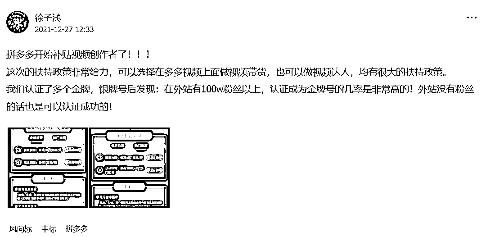
刚开始干的第一年，我们的模式很简单，就是自己先跑通项目，然后把我们的 SOP 梳理出来，做成一个培训项目，靠培训招生再赚一笔钱。
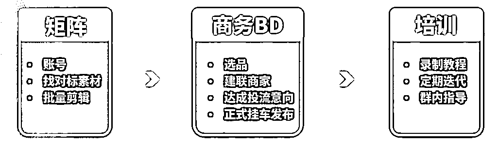
靠着当时项目处在红利期，执行力拉满，一边自己实战，一遍和合伙人一起培训学员，一年的时间让我变现了100万。
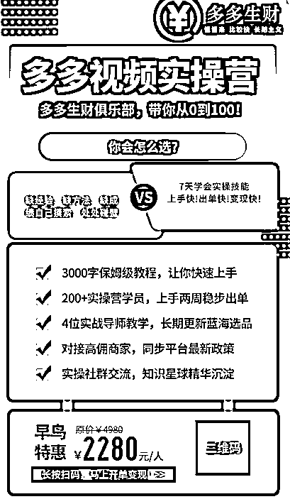
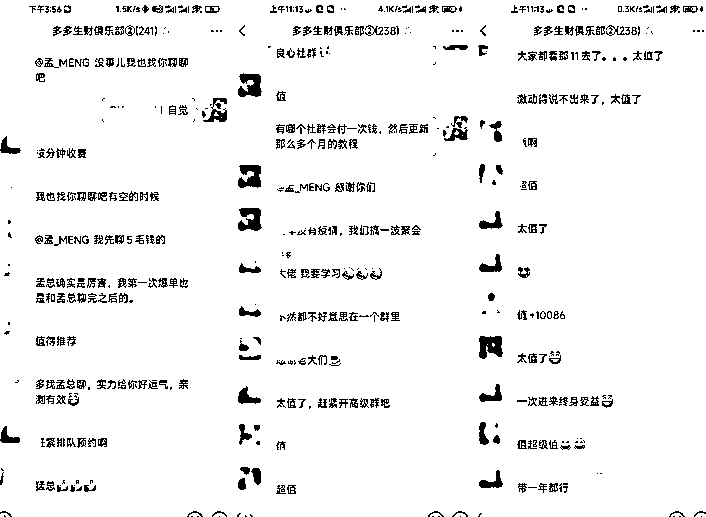
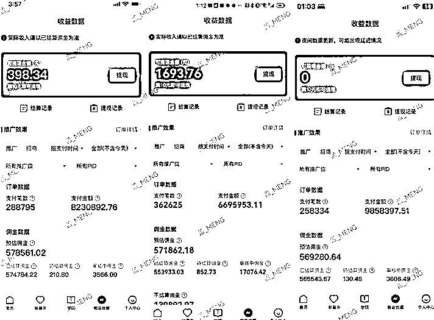
但在培训几个月后，我们就发现，培训的学员一多，学员难免跟我们做到一样的素材一样的产品，就形成了一种互相竞争，互相内卷，给自己培养同行了。
当时这个模式，优点是适合新手启动，能够低成本低风险的扩大收益。 缺点在于没法和学员有深度的绑定，容易变成培养同行，以及收益只有单笔培训费，没有长期的管道收益。
通过这个多多视频带货项目，我和合伙人们都各自取得了不错的实战结果，同时也在开展培训，但我们当时做的培训，仅仅是收一份学费，就没有后续了。我和我的合伙人们都开始思考，怎么样才可以继续去放大？
有一天我和往常一样在看文章的时候，看到盗坤大佬发的一篇文章，讲的是一个创业者，通过无底薪招聘员工的方式来剪辑，发布视频，自己则负责后端，按收益进行分成，靠这个模式赚了500万。
于是我就开始思考多多视频能不能也这么做，我们通过一年的项目实战，手上掌握大量的优质商家和商品链接，只要低成本招聘到"无底薪员工"，帮助他们赚到钱，那我自然也就能赚钱了！
于是我们开始尝试，通过抖音直播，展示多多视频这个项目简单易上手的实操，每天只需两小时，不影响你主业就可以开展副业，以此来吸引想通过副业赚点小钱的群体，来成为我们的无底薪员工。
用一个相对低廉的门槛费，让 “无底薪员工” 先拥有 “沉没成本”，这样他们才会有足够的执行力，通过绑定MCN机构的方式，我们教无底薪员工快速上手这个项目，而我们掌握核心资源，那就是愿意给视频投流，且能付出视频佣金的商家。
让这批帮我们发视频的学员，一发视频，商家就投流，可以快速的拿到正反馈，实现与”无底薪员工”深度绑定，长期分润。后来我听说，这个模式叫做阿米巴。
一年的时间，我们用这个模式孵化了1000+多多视频达人，做到了多多视频的头部，每月能发放6位数的佣金，年利润做到了千万！
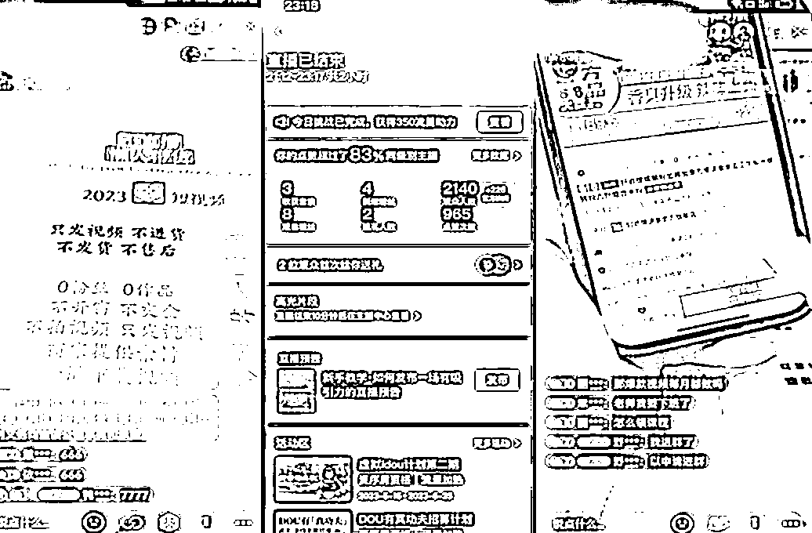
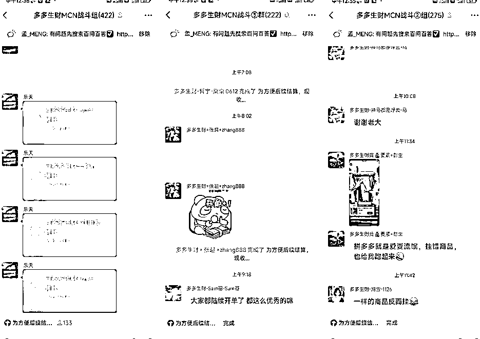
当时我们整个团队只有10个人，其中交付团队4个人，流量团队3个人，商务团队3个人，这让我们尝到了轻资产、负成本搭建团队，扩大项目收益的甜头。
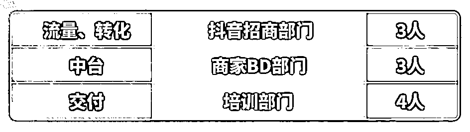
相比的上一个阶段，我们的收益上多了学员带来的后端分成。 这种模式也解决了培训模式中，无法深度绑定，享受长期分润的难题。
但随之而来的就是瓶颈，拼多多毕竟是一个购物平台，不是内容平台，拼多多发展多多视频，只是用来提高用户留存率，提升用户下单转化率的一个手段，并不是主要营收渠道，所以没有太大的上升空间，市场也容纳不下更多的达人，于是我们团队开始寻找新的增长机会。
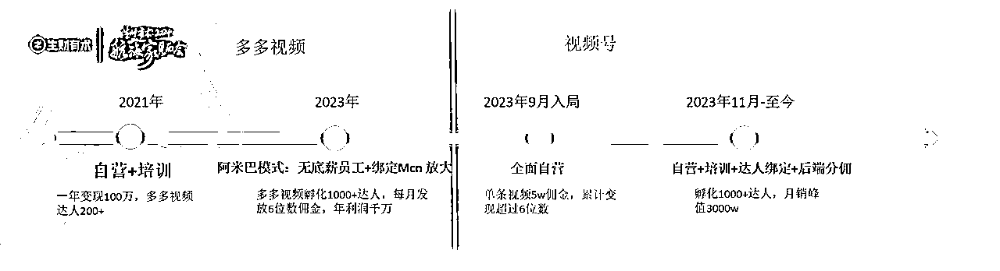
第三阶段，就来到了2023年视频号带货这个项目。
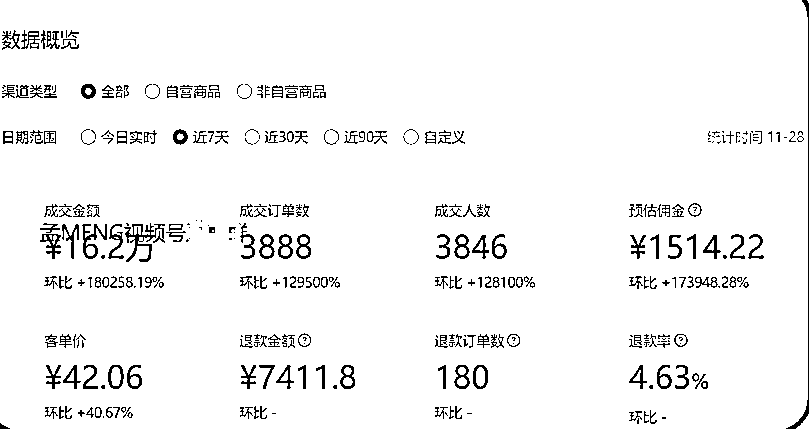
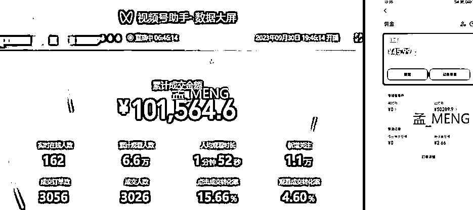
我们团队从23年9月份开始入局视频号带货，从最开始的搬运剪辑，到后来进入视频号素人口播带货赛道，最开始我们也和市面上很多同行一样，自己测品，打品，打爆后，放大收益。
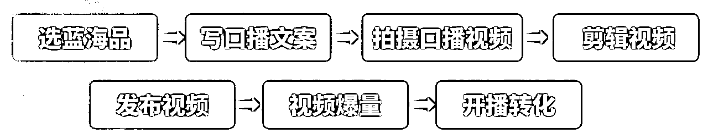
这个阶段使用自营的模式去打品，优点就是人员可控，利润高，佣金都是自己的。
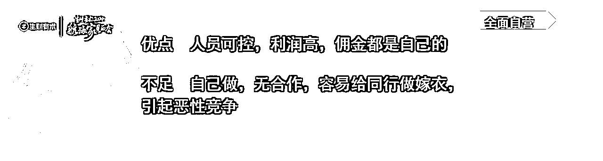
但打了几个品之后，我们就发现这样不行，我们测出什么品，同行第一时间就能在广场上面刷到我们，去跟我们的品，辛辛苦苦测的品就给同行当嫁衣了，当时我们想的是要快速放大规模，让同行还没刷到时，我们至少要先吃这个品80%的流量。
一般说到放大项目规模，大家往往会想到，用扩大自营的模式，去扩张。
那扩大自营就要面临着，人员，场地，设备，账号，管理等等成本，又要面临扩大后平台规则变化，玩法升级等潜在风险，我们团队不擅长。
但是，我们有了之前多多视频，培训+MCN长期绑定分成的经验，有现成的作业，可以自己抄自己的，于是我们就选择了培训招生，招来的学员全部来跟我们团队已经测爆的产品，我们则给学员提供高佣供应链，赚取供应链返点。
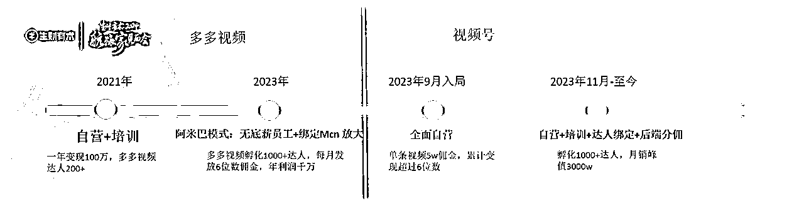
我们开始做起了素人口播培训，如果我们盲目的去扩大自营，做自己不擅长的事，可能会遇到不可控的风险。
所以我们选择了做自己擅长的事，发挥自己的优势，才能把规模做到这么大，取得还不错的结果。
弥补短板只能趋于平凡，发挥优势才能实现卓越。
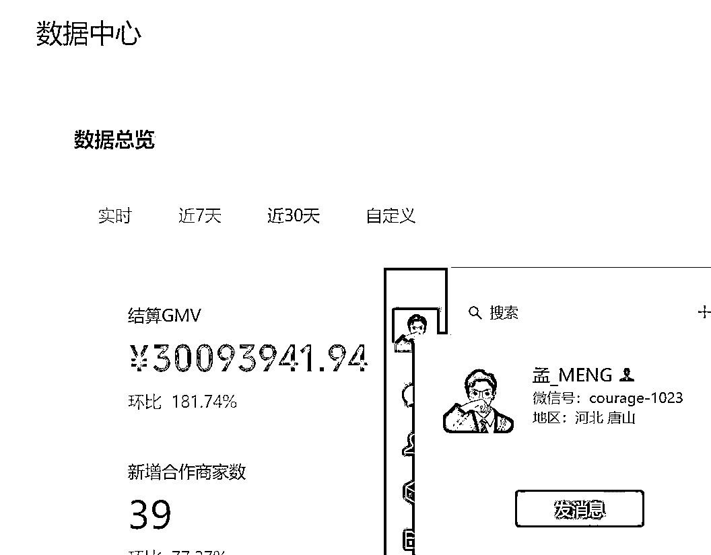
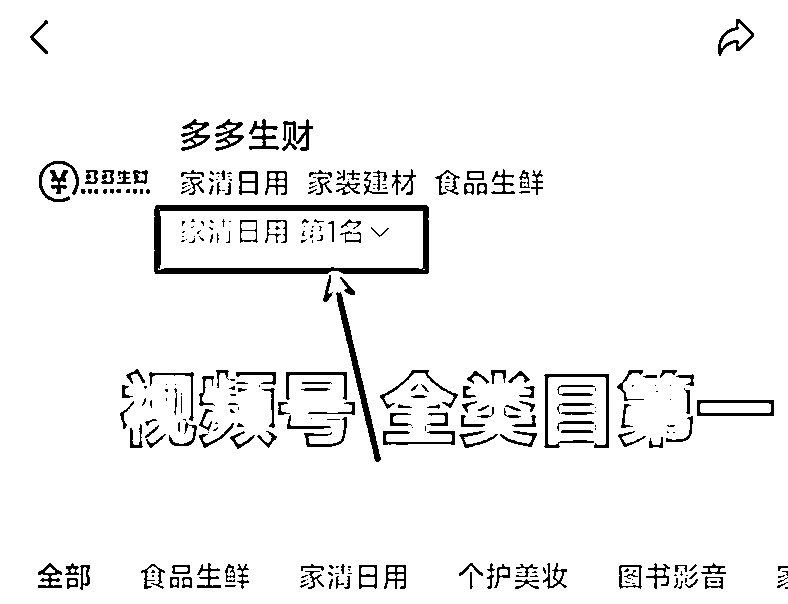
下面和大家分享一下，我们团队是做培训的思路和方式是怎样的，我们规模能做大的点在哪里？
首先我们来看一段视频，这是我团队的一个70后宝妈，单条素材超过600w播放量，6w成交额。
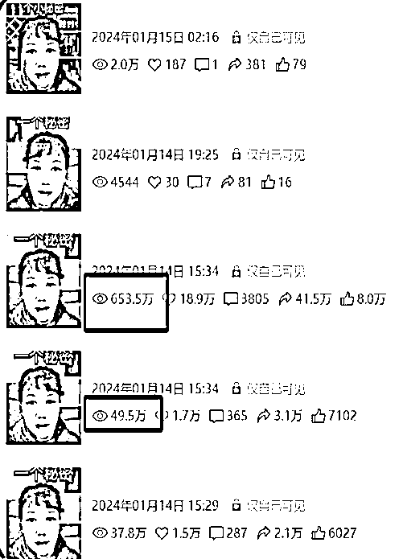
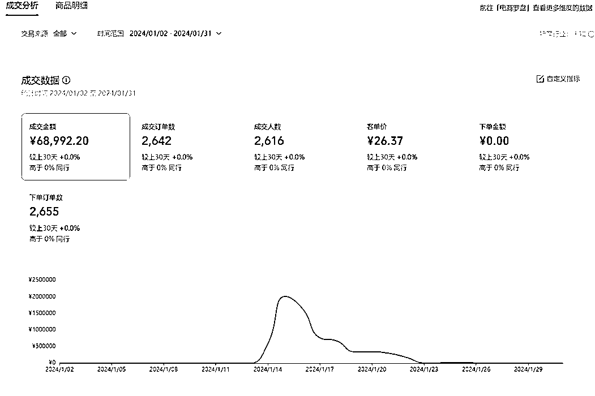
这是宝妈学员参加培训1个月后取得的成绩，一个居家带娃的宝妈，
为什么能短时间取得成绩，要得益于我们的培训模式，我从 如何找人 如何留人 团队管理 三个方面给大家展开讲
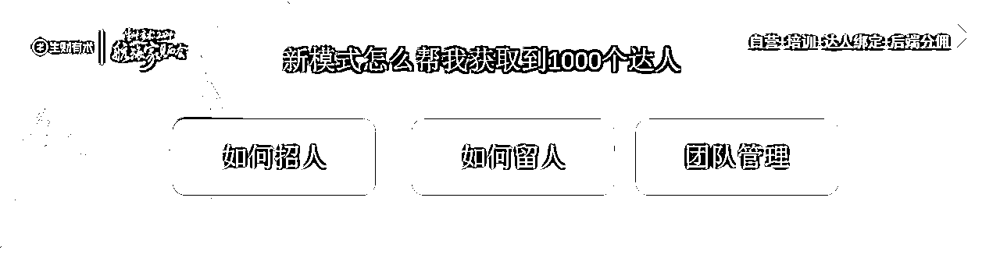
我们团队做培训是为了，把我们测出来的爆品利润放到最大，让学员使用我们提供的爆品供应链，通过扩大团队GMV规模，和来供应链争取更高的带货佣金+ 额外返点，而不是通过增加培训费和压榨达人的佣金来获取收益。
所以会更注重提高学员的成才率，真正让学员去变现，来获取我们后端的收益。
视频号这个项目需要学员的执行力足够强，才可以快速去拿正反馈，基于提高成材率，提高GMV规模的战略。
我们选择将培训费用定在2980，通过这个门槛，可以筛选出一些更有执行力的达人。相比市面上6980，3980的培训费，我们的价格就显得更有竞争力了。
通过降低培训价格，帮助学员快速拿结果，扩大团队影响力的方式，收了1000多个学员进团队。当我收了这么多学员进来，学员之间的水平肯定是参差不齐的，那如何才能保证爆品出来，学员能够马上跟上？
那就需要通过优化培训和协作的方式来提高学员的人效。
大部分做培训的同行，去带学员做视频号的常规做法，一般是带学员跑通独立闭环。让学员学会：找供应链做商务沟通、选品、文案、拍摄、剪辑、直播带货... 这十八般武艺。
这种做法的好处，确实大大提升学员个人能力，让学员具备带货达人完整的技能。但坏处就是，效率降低，难度加大，成材率变低，想要让学员真正能把各环节打通，从而赚到钱，需要耗费大量的时间，而互联网的今天，平台红利是在一分一秒流逝的，我耗不起！
所以我认为：让每个学员去做自己擅长的事情，大家分工协作，才是提高效率和产出的最优解法。
因为不是所有人都有原创能力的，所以很多新入局的学员，想从这个项目中赚钱，都得先从当二创达人开始。
以往市场上，二创达人和出境达人一般是不认识的，所以二创达人可能会不打招呼，不谈合作，直接搬运原创达人的素材。当原创达人发现后，举报二创达人肖像侵权，二创达人又会反过来投诉出境达人。双方陷入负和博弈中，互相消耗。
但这样的情况，发生在组织内部，我就必须得想一个方法解决这个问题了。所以我提出要跟原创达人合作，给予原创达人分成，而不是直接窃取别人的劳动成果。这个利益机制调整后，我们团队的原创达人都很乐意和其他伙伴分享自己的素材。把朋友搞得多多的，把敌人搞得少少的，大家在一起互惠共赢。
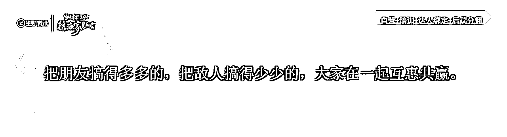
因为我们的视频是靠自然流的，那在视频内容上面就要千方百计的去获取平台的流量，账号的存活期不会太久，大爆过后就很容易违规，1000个学员没办法源源不断的铺号。
但是让学员直接解决账号资源，也会产生不小的成本，沟通起来浪费时间，效率也很低。
假如一个学员通过找亲戚朋友，或各种方式能搞来10个账号，那我们团队要是有2000个3000个学员呢？
但是团队自己去招学员搞培训，我们创始团队的精力不足，怕交付做不好。
所以，为了有源源不断的账号供给，我们团队选择建立二级团队，从1000位达人里面筛选，具备一定运营能力的学员来孵化，把我们的培训资料授权给他们，让他们自己去带学员，成为我们的二级团队，
对于我们来说，只要手上的达人数量够多，走的是团队的供应链，那么，哪怕给达人的佣金高一些，我们抽的服务费少一些，都是没关系的。 因为当团队月GMV能干到大几千w，哪怕只赚取几个点的供应链返点，月收益也非常的可观了！
通过建立二级团队的方式，我们快速的把每日开播账号从500个拉到了1000个以上，日销从50w突破到百万，全体业绩实现了翻番。
我们的收益结构也从从单干到培训到分成到最后现在供应链返点模式。
前端也有了培训、 BD、和二级团队。
有了这么多学员，我们的支持配套也更加完善，给学员提供供应链，外包的剪辑团队，兼职代播团队，账号软件等资源合作。
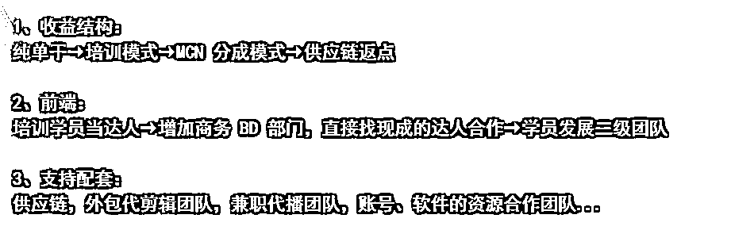
每个月根据学员的月总佣金进行排行，召开线上表彰大会，针对佣金前三名直接奖励苹果手机一台，邀请获奖的学员发表获奖感言。同时对每个月开发新品的同学，给予一定的供应链返点奖励。
一是让学员有获得感，团队归属感。
二是让还没获奖的学员看到希望，都是从零开始的学员，没有谁比谁更优秀，只要拼搏努力，下一个获奖的就可能是自己，形成一种榜样效应。
本质还是因为我们是靠后端服务费赚钱的，所以我们会真的想要让达人去赚钱，想尽各种方法让达人增收，达人感受到我们的真诚，那他肯定会留下来。
真诚就是最大的必杀技！
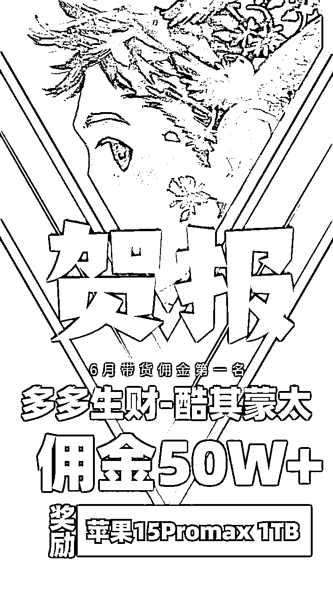
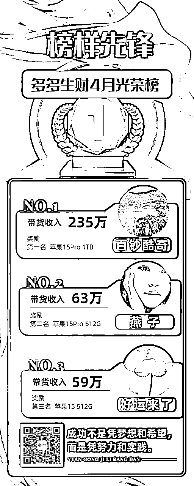
当我有了1000+直属达人，还有下面多个二级团队后，怎么样才能让整个组织稳定运转，不断增长，那就是成为服务好达人的大中台，让达人留在我这里，真正能够赚到钱，才能去实现长期绑定
前面我提到达人这里面分为出镜达人、二创达人。
那我们具体是怎么做的？ 那就是分类管理。
我们主创团队：作为中台，负责选品测品、采集文案和分发素材
接着我们团队把学员分成了三类
a.未掌握出镜能力的达人
就是二创达人，这类达人就是剪辑出镜达人的爆单素材，那对他们来说，就是素材要多、佣金要高。
素材我们这边可以做到每天稳定更新，有足够多的出镜达人供给素材，可以第一时间跟品。
因为我们团队目前的规模足够大，视频号带货团长做到了全平台榜单第一，每个月也能卖几千万，与供应链都建立了良好的合作关系，自然可以拿到全平台最高佣金，如此高佣金是个体达人自己去找商家拿不到的。
而且我们这种打法走的都是线下T+1结账，达人自己去找商家，有可能会出现被商家跑路或者结账不及时，以及账号多了没办法做到链接及时更新，佣金没法及时同步等等情况，但如果走我们这边的供应链，我们就可以做到兜底，他只需要做好他最重的事情就行。
b.掌握出镜能力的达人
首先，出境达人产出爆款素材，可能他没有办法做到短时间内去放大，通过我们团队合作的形式，把素材给到团队来审核，由团队安排二创达人做分发，他就可以获取他的肖像权分成。
如果他不主动给团队分发，广场上别人刷到了这个素材，也会去搬运他的，这样他也没有分成。
接着，我们团队会培养出境达人逐步往垂直类目达人方向发展，成为真正的素人带货IP。
c.掌握矩阵打品能力的学员：
这类学员他们不具备出镜的能力，但是有优秀的项目操盘能力，我们团队帮助他们组建线下小工作室，找附近的同学分工合作，成为抗风险能力更强的带货工作室。
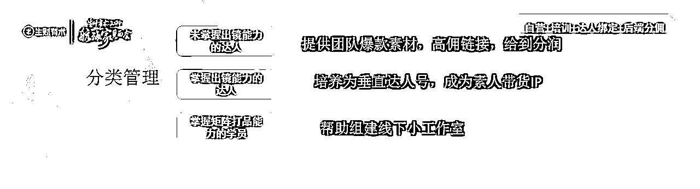
前面我提到了，我们做视频号素人口播带货，视频爆了之后，就要立马开直播带货了。
但在实际操作过程中，会有一些问题，比如：
视频爆了，但是号主本人自己没空播；
或者多个账号，多个视频都爆了，就算能直播，也不能同时开播，分身乏术...
所以我们意识到，发展出 1000+达人之后，我们必须有配套的千人代播团队，才能进一步的，稳定的放大规模！
于是，我们在后续做了这些动作：
前期通过我们原先多多视频项目的流量池，里去发布招募信息，招来了几百位主播，又通过给这几百位主播分润，让他们再去帮我们招主播，介绍自己身边的亲戚朋友或通过网络获客的方式，给我们招募进来更多主播。
代播业务订单量持续增加，为了让上岗的主播，都相对靠谱些，我们对人员的管理进一步细化，建立了主播的分级接单机制。
进行优胜劣汰的筛选，整体直播下来，人货场方面表现好的，进一群二群，表现不好的回实习群回炉重造。派单优先往一群二群派单，实在没有人了再从后面的三四五群选拔。倒逼主播自己学习成长，进入一群二群优先接单。
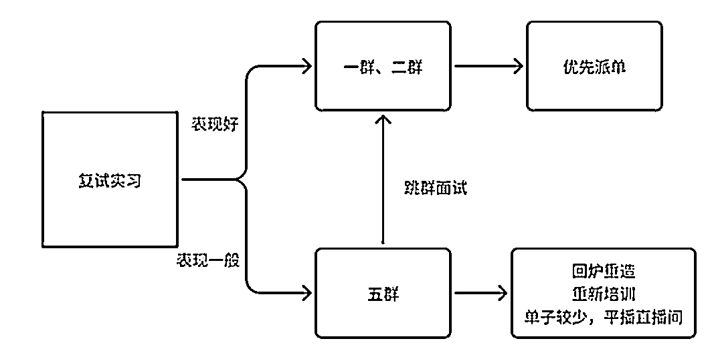
至今我们已招募超过2000+主播，做到每天稳定开播1000+账号。
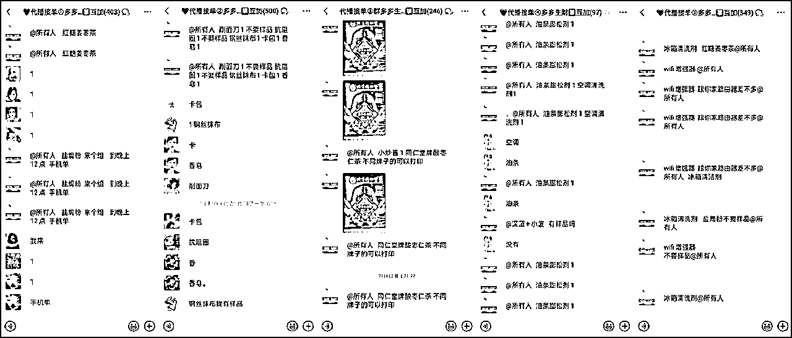
至此，一个闭环就形成了，团队1000位学员紧密合作，大家各司其职，各负成本，共担风险，这让我们团队的效率和氛围，大大的提升。
即使偶尔遇到平台的规则变动，也能做到快速升级到下一个玩法，穿越项目的周期。
出镜达人，打品达人，主创团队，实现三方共赢。
这套模式走过来，并非一帆风顺。
我们团队用这个模式实践，两个项目都能成功，有三个必备条件，缺一不可。
平台有风口，项目有红利，业务模块化。
如果平台不给机会，项目没有足够大的市场，没办法去做模块化分工协作，那哪怕我们的模式再牛逼都不可能做成，所以还是选择大于努力，找到一个好平台，好项目，是我们这个模式成功的第1步。
首先，因为视频号没有像多多视频那样的 MCN 绑定和电商分账机制，缺乏有效管控学员的绑定和分账手段。再加上我们公司之前没有跟学员签合同，也没收保证金，这导致有一小部分的学员做大之后，会选择脱离团队单干。
再则，二级团队的建立，从结果上来说是带来了达人数量的快速增长，是好的结果。 但是过程中，也出现过很多混乱和麻烦。
比如：有的团队长，拿着团队授权的培训资料、项目数据，在外面晒数据秀肌肉，招生之后交付烂尾。而学员会认为这是我们团队的所作所为。 个人行为，团队买单了。
再比如：拿着团队的资料做培训招生，靠着我们团队的资源和品牌起了家，后面觉得自己手上达人多了，就不使用团队供应链，自己拿着手上的达人筹码去谈供应链了。
建立二级团队这件事情，让我意识到，快速增长也是有相应的代价的。
这些问题，我也有认真思考，怎么解决、优化？
在选品上，我们可以往非标、高利润的独家供应品上靠，比如有特殊资质的农产品、地域性的生鲜产品。让学员卖这个品的收益，大于卖一般的商品。并且学员离开团队就无法获取相应商品。
让学员觉得，在团队里待着收益是最大化的，又省心又能多赚。而出去单干后，又操心，赚的还不一定比现在多，出去不划算。
之前我们没有对用户做好精细的分级运营，无论是实力强劲的大户学员，还是刚入局的新人学员，都是在一个群里，用一样的方式运营。
这两种学员所处的阶段不一样，所交流的东西也不一样，在一个群没法聊到一起去，慢慢的就会失去在大群彼此交流的欲望，去寻找其他渠道。
如果再来一次：
我会对学员也使用分级分群运营的策略，给不同等级的群传授的方法论，理解和执行难度不一样，让高手跟高手一起聊，进行高质量的讨论。让新手和新手一起玩，一起学基础的知识。
我们前期，因为认知不足，没有对二级团队收取保证金，导致现在局面被动。
如果再有类似项目，我们肯定会对二级团队采用招商加盟的模式，先对想开二级团队的达人进行审核，评估实力、人品，如果合适，再收取加盟费和保证金，签订合同。
合同里面肯定要约好走公司的供应链，发展二级团队过程中要接受总部的监管，如果二级团队成员的投诉过多，要有相应的惩罚，等情况。
不会再像以往那样，放二级团队的门槛太低，监管宽松了。
总结来讲，我想说：
创业过程中，创始人要在一切欣欣向荣的局面中，看到潜在的风险，居安思危，做好应对措施，而不能盲目的沉浸在喜悦当中。
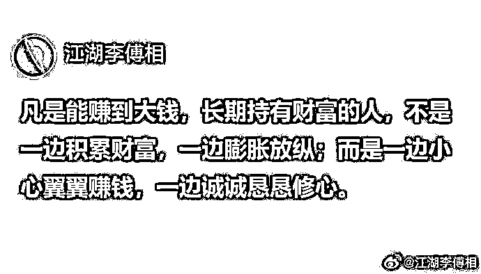
大家起盘的时候都是草台班子，但是未来总是要起高楼，走过一些周期会深刻地意识到，自己做的是小生意，并不是终身事业，所以我也在持续的学习进步，向前辈们讨教，不断实践精进，力争更上一层楼。
想做成事业，要有大钱赚，就要把团队组织化，独立搭建前端，中台，后端，所谓铁打的营盘，流水的兵，有了一套可持续运转的运营模式，不管项目，平台，人员再怎么变动，都可以迭代到下一阶段。
我这个模式并不高级，还有很多值得迭代的地方，市面上也有很多同行在做这套模式，相比市面上专业的同行，我们团队更像是一个草台班子，为什么是我比较幸运，刚好能够成功？
这一切都源于我加入了生财有术，在这里有许多优秀的大佬分享生财之道，有许多成功的圈友分享生财之术，看到了前辈们如此丰功伟绩，让我觉得我这点小成果是多么微不足道，还有很大的进步空间。
是生财有术打开了我的认知，让我见了世面，有了干大事的野心。
如果你想赚一个亿，你手下就得有赚1,000万的人。
如果你想赚1,000万，你手下就得有挣100万的人。
没加入生财之前，别说1,000万了，我连100万都不敢想，那时候我就在想，等我把家里的债还完了，再赚上100万，那我该多么的开心快乐，得像小说里那个称霸a市的男主，笑得多么猖狂，得是多少万人之上啊！
加入生财，真正下场赚了100万后，发现对于生财创业者来说，100万也只是个开始，千万过亿也并非遥不可及。
但这一路走到现在，赚多少钱对我来说并不是那么重要了，我已经过了，需要靠赚钱来解决温饱的阶段。
因为自己淋过雨，也想为别人撑起一把伞，现在对我来说用这套模式，去发掘更多项目，帮助在主业之外没有额外收益的人， 没有固定劳动时间的人，没有专业知识能力赚钱的普通人，和我一样不甘平凡的人，获取一份额外的副业收益，哪怕开始赚到一袋盐的钱，这才是最重要的。
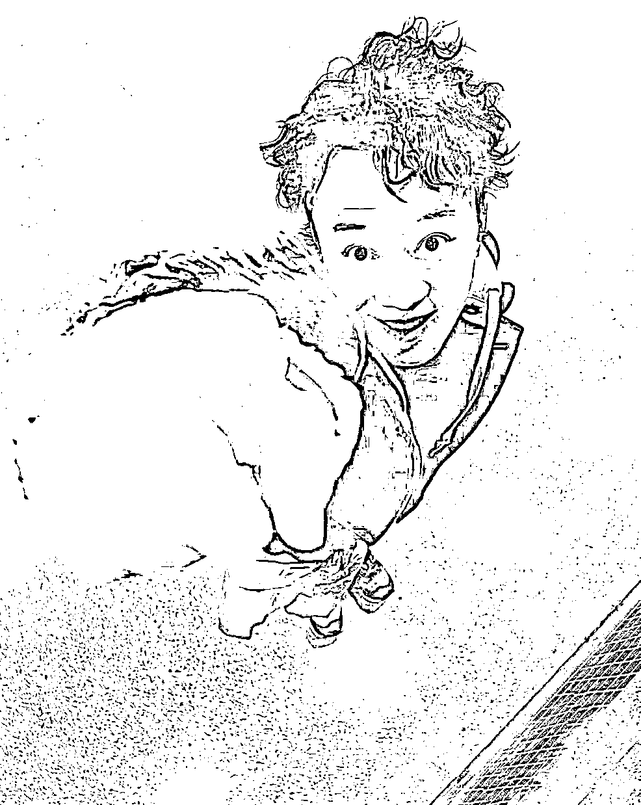
这一路过来，我也悟到了
你再厉害都不重要，重要的是，你能帮助多少人变得厉害！
钱并不是赚来的，而是在你解决了别人的问题以后，获得的回报。
你能帮到多少人，就会获得多少财富。
成人达己，甘为人梯，近我者富！
这是生财带给我的热血和野心，我这一路不断积累了解决问题的能力，积累了我带过的这些学员们的信任，积累了许多生财前辈传授的经验，比银行卡里那躺着的数字，比买车买房这种物质，让我更感觉踏实、有底气。
以上就是我今天全部的分享，再次感谢生财有术，感谢圈友们听我分享，
让我们一起热血生财，一起生财有术！